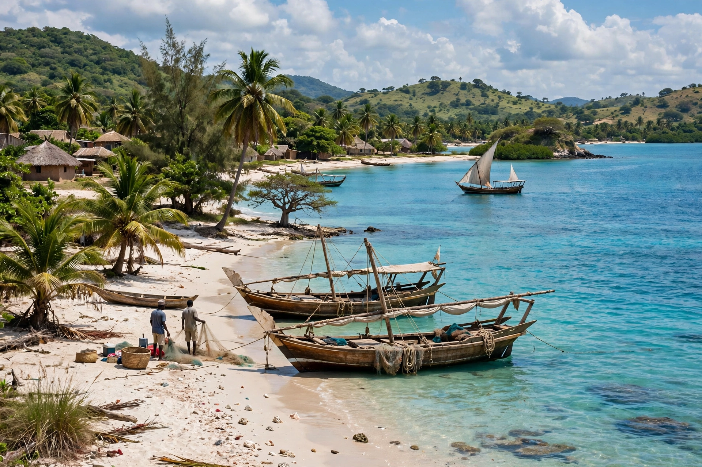

Cabo Delgado is the northernmost province of Mozambique, bordering Tanzania to the north, the Indian Ocean to the east, Nampula Province to the south and Niassa to the west. Its capital is Pemba.

The province includes the Quirimbas Archipelago and national park, offshore Rovuma Basin natural gas fields — among Africa's largest — plus ruby mining around Montepuez, graphite and tourism. Peoples include Makonde, Mwani and Makua groups; languages include Makonde, Mwani, Swahili and Portuguese.
Since October 2017 an Islamist insurgency linked to Islamic State (locally called al-Shabaab, unrelated to Somalia's group) has attacked towns including Mocímboa da Praia and Palma (2021), displacing hundreds of thousands. Mozambican forces, supported from 2021 by Rwandan troops and a SADC mission, retook key towns, though insecurity persisted. Gas projects by TotalEnergies and ExxonMobil were delayed by the conflict. See Insurgency in Cabo Delgado.